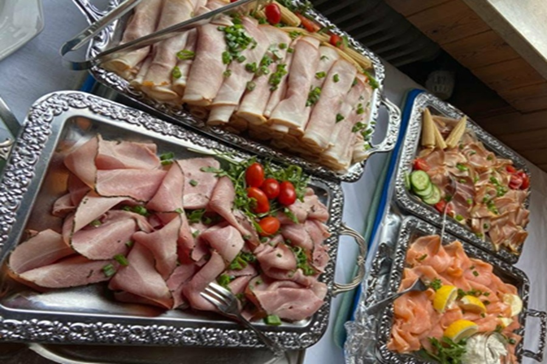
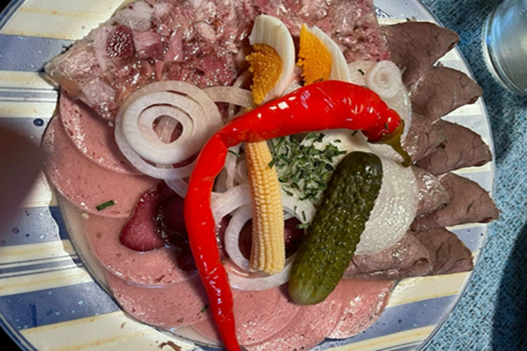
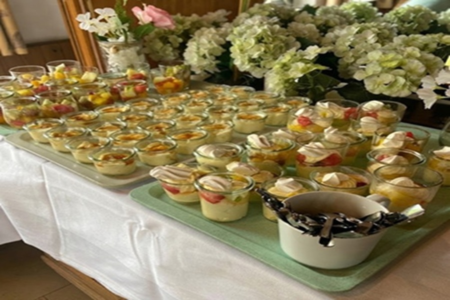

Catering & Lieferservice
Echtes, gutes Essen für Ihr Zuhause oder Ihre Feier.



Alle Details zu unserem Lieferservice und individuelle Absprachen für Ihr Catering besprechen wir am besten direkt telefonisch unter 07957 926877.
Mit echter Hausmannskost und herzhafter gutbürgerlicher Küche machen wir Ihre Feier zu einem runden Erlebnis.
Ob im kleineren Kreis oder bei größeren Festen – wir bringen echten Geschmack und deftige Köstlichkeiten direkt aus unserer Küche auf den Tisch. Von reichhaltigen warmen Buffets über knusprige Braten mit passenden Beilagen bis hin zu deftigen Klassikern richten wir das Essen ganz nach Ihren Wünschen für jeden Anlass aus:
- Familienfeiern: Geburtstage, Taufen, Konfirmationen oder runde Jubiläen
- Feste & Feiern: Vereinsfeste, gemütliche Runden oder Weihnachtsfeiern
- Geschäftliche Anlässe: Firmenfeiern und Zusammenkünfte
Mittagstisch-Lieferservice: Von Montag bis Freitag liefern wir unseren frischen Mittagstisch direkt zu Ihnen nach Hause, in Firmen, Kindergärten oder Schulen in Kreßberg und Umgebung. (Bestellannahme für den jeweiligen Tag bis spätestens 09:00 Uhr).
Damit alles genau zu Ihrem Fest passt und wir Ihre Wünsche besprechen können, rufen Sie uns am besten einfach an. Wir beraten Sie persönlich und finden gemeinsam genau das Richtige für Ihre Gäste!
Landgasthof Adler – Telefon: 07957 926877